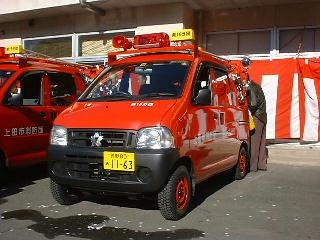
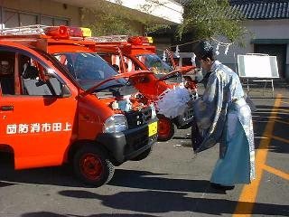
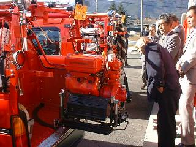
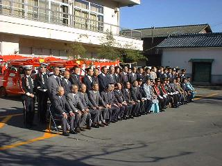

| トピックス |
いよいよ始動！班編成統廃合へ
～軽可搬積載車入魂式～
平成１１年１２月２３日（木・祝）
|  |
| 永年の懸案であった班編成の統廃合に向け、機動力に優れた軽可搬積載車２台の配車を受けました。統合後の「第一班」（手塚・野倉）と「第三班」（西前山・東前山）に配備される予定で、これで当分団の車両は４台となります。 |
|  |
| 日本中央と言われる地元の生島足島神社より神主宮司さんをお迎えし、神事に則り入魂式がおごそかに執り行われました。 |
|  |
| 写真のようにポンプが９０°旋回しますので、ポンプを車両に搭載したまま放水活動を行うことが可能です。従来は団員自家用の軽トラックにポンプを載せていましたが、今後はこの４人乗り消防車を活用することで、一層スピーディ、かつ安全に出動できるでしょう。 |
|  |
| 近代的な装備の充実により、地元の期待もいっそう高まります。団員一同、法被の帯を締めなおし、予防広報を中心とした消防団活動をさらに推進し、「西塩田からは災害を出さない」という誓いを新たにしました。 |
このページの最終更新日：2001/01/22